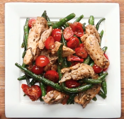

Pesto Chicken & Veggies

Description
This only requires one pan and minimal prep — and store-bought pesto does all the heavy lifting.
Ingredients
- 2 tablespoons olive oil
- 4 boneless, skinless chicken thighs, sliced
- salt, to taste
- pepper, to taste
- 1 lb green beans
- 2 cups cherry tomato, halved
- ½ cup basil pesto
Steps
- In a large pan, heat olive oil and add chicken thighs.
- Season with salt and pepper. When the chicken is completely cooked through, remove from pan.
- Slice into strips, and set aside.
- Add green beans and cook until crisp tender.
- Return the chicken strips to the pan, then add tomatoes and pesto. Stir until fully incorporated.
- Serve immediately or divide into 4 food storage containers and store in the refrigerator. Can be kept refrigerated for up to 4 days.
- Enjoy!
Home